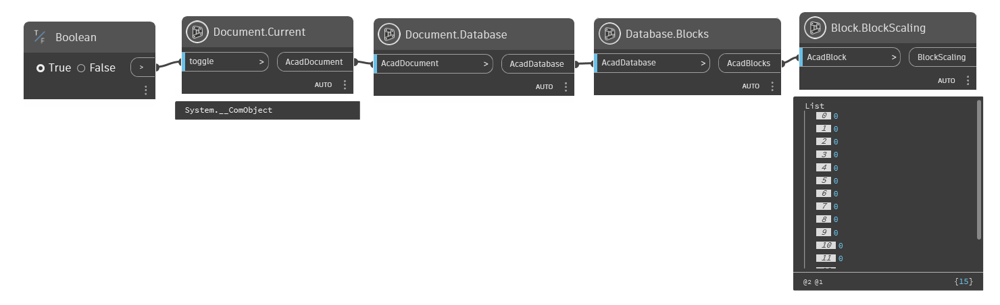
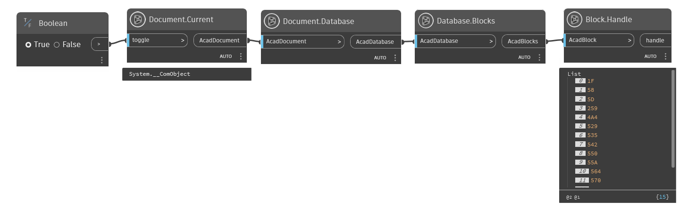
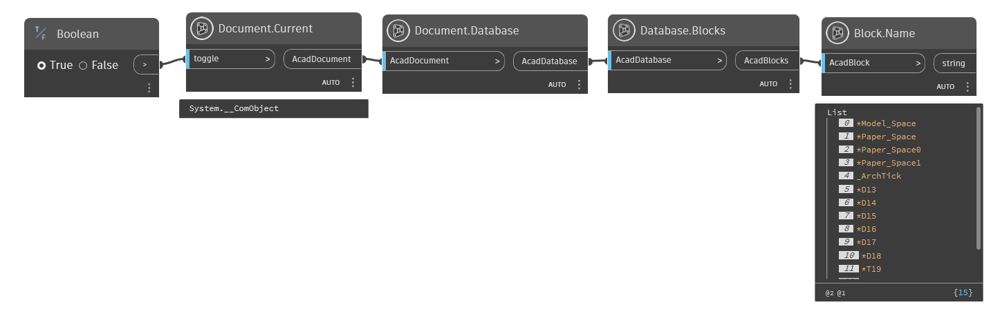
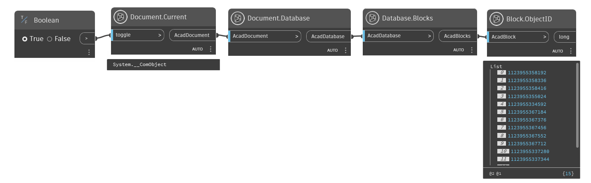
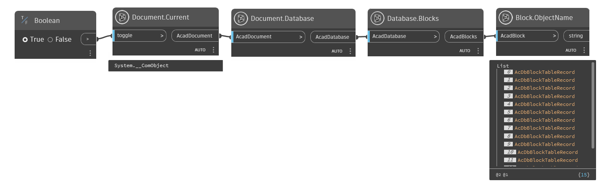
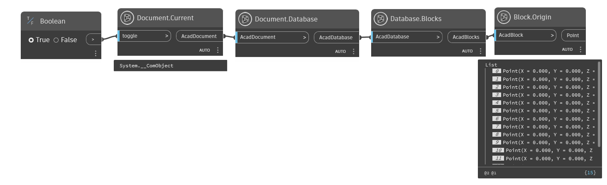
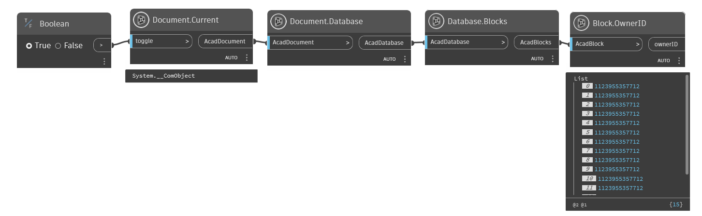
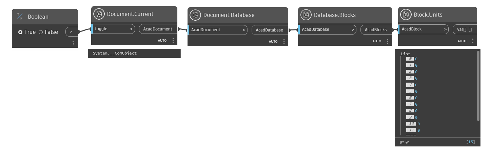

Class Block
- Namespace
- OpenMEPCad.Autocad
- Assembly
- OpenMEPCad.dll
A block definition containing a name and a set of objects. https://help.autodesk.com/view/OARX/2023/ENU/?guid=GUID-E6F7B03B-F5CC-4A18-9C48-BBF1D32A31FD
public class Block- Inheritance
-
Block
- Inherited Members
Methods
BlockScaling(dynamic)
Specifies the scaling allowed for the block. https://help.autodesk.com/view/OARX/2023/ENU/?guid=GUID-F8A1C955-9669-4132-BBF3-6F7BE4710471
public static dynamic BlockScaling(dynamic AcadBlock)Parameters
AcadBlockdynamicAcadBlock
Returns
- dynamic
enum of scaling
Examples

Block.BlockScaling.dynHandle(dynamic)
Gets the handle of an object.
public static string Handle(dynamic AcadBlock)Parameters
AcadBlockdynamic
Returns
- string
The handle of the entity.
Examples

Block.Handle.dynHasExtensionDictionary(dynamic)
Determines whether the object has an extension dictionary associated with it.
[NodeCategory("Query")]
public static bool HasExtensionDictionary(dynamic AcadBlock)Parameters
AcadBlockdynamicAcadBlock
Returns
- bool
true if The object has an extension dictionary associated with it.
Examples
 Block.HasExtensionDictionary.dyn
Block.HasExtensionDictionary.dyn
IsDynamicBlock(dynamic)
Specifies whether this is a dynamic block.
[NodeCategory("Query")]
public static bool IsDynamicBlock(dynamic AcadBlock)Parameters
AcadBlockdynamicAcadBlock
Returns
- bool
true if The block is a dynamic block.
Examples

IsLayout(dynamic)
Determines whether the given block is a layout block.
[NodeCategory("Query")]
public static bool IsLayout(dynamic AcadBlock)Parameters
AcadBlockdynamicAcadBlock
Returns
- bool
true if block is layout block
Examples

IsXRef(dynamic)
Determines whether the given block is an XRef block.
[NodeCategory("Query")]
public static bool IsXRef(dynamic AcadBlock)Parameters
AcadBlockdynamicAcadBlock
Returns
- bool
true if block is an Xref block
Examples

Name(dynamic)
Specifies the name of the object.
public static string Name(dynamic AcadBlock)Parameters
AcadBlockdynamic
Returns
- string
Name of the object.
Examples

Block.Name.dynObjectID(dynamic)
Gets the object ID.
public static long ObjectID(dynamic AcadBlock)Parameters
AcadBlockdynamicAcadBlock
Returns
- long
The object ID of an object.
Examples

Block.ObjectID.dynObjectName(dynamic)
Gets the AutoCAD class name of the object.
public static string ObjectName(dynamic AcadBlock)Parameters
AcadBlockdynamicAcadBlock
Returns
- string
The AutoCAD class name of an object.
Examples

Block.ObjectName.dynOrigin(dynamic)
Specifies the origin of the UCS, block, hatch, or raster image in WCS coordinates.
public static Point Origin(dynamic AcadBlock)Parameters
AcadBlockdynamicAcadBlock
Returns
- Point
Examples

Block.Origin.dynOwnerID(dynamic)
Gets the object ID of the owner (parent) object.
public static dynamic OwnerID(dynamic AcadBlock)Parameters
AcadBlockdynamicAcadBlock
Returns
- dynamic
The object ID of an object's owner.
Examples

Block.OwnerID.dynUnits(dynamic)
Specifies the native units of measure for the block.
public static dynamic Units(dynamic AcadBlock)Parameters
AcadBlockdynamicAcadBlock
Returns
- dynamic
Examples

Block.Units.dyn